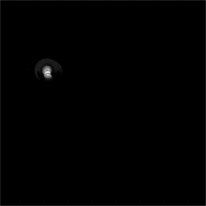
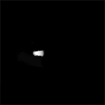
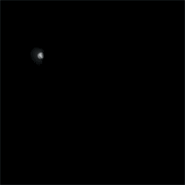

Liquid Type In Motion
Russian graphic designer, Ruslan Khasanov’s portfolio is full of experiments with unusual techniques and materials. In his latest Liquid Type In Motion series Ruslan uses stop-motion photography to capture typography in liquid form. View the full project and his other work on Behance.